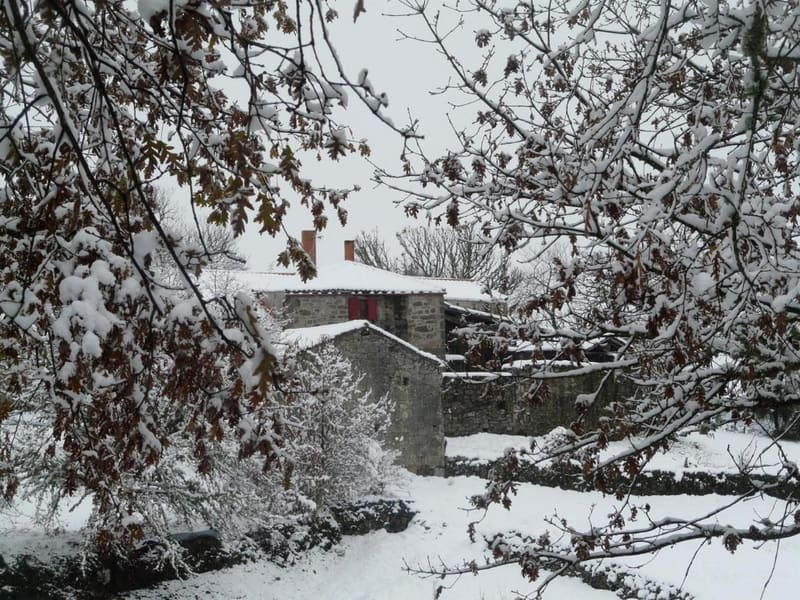
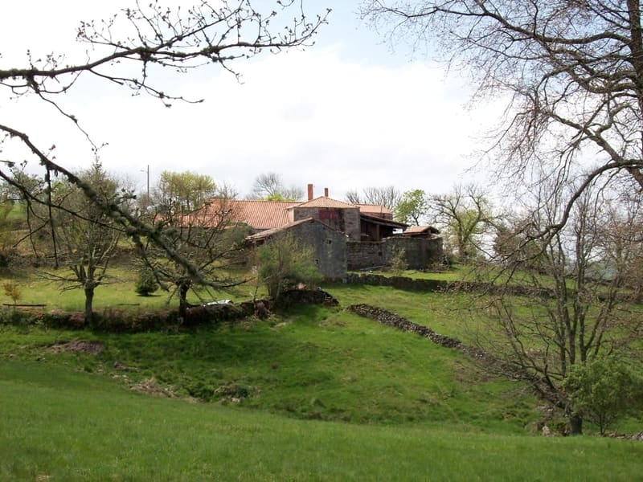
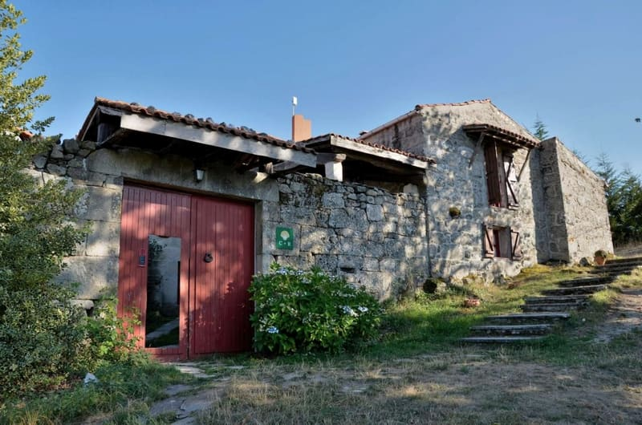
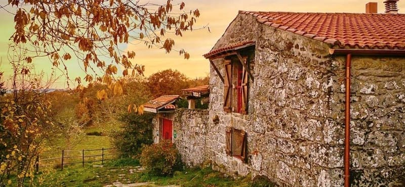

Fiestas y feria
- 12 y 28 de cada mes
- Feria de Montederramo
- 14 al 16 de agosto
- Fiestas de San Roque y la Asunción
- 8 de septiembre
- Fiesta de los Remedios
- Noviembre
- Magosto: castañas asadas en la lumbre
Banco de Secciones. Más abajo: «Dibuja mi mapa» y «Un año en la casa».
Las rutas de Manolo
Manolo camina y corre estos montes, y a cada huésped le dibuja a mano su mapa. Esto es un adelanto con las siete rutas circulares que eligió en su blog entre las de la Ribeira Sacra: di cuántos días tienes, cuánto te apetece andar y qué te gusta, y el mapa se dibuja sobre el relieve de la comarca. Luego, llévatelo.
Desplegando el papel…
Pasa el dedo o el ratón por el perfil: el punto rojo te dice por dónde vas en el mapa.
Kilómetros, desnivel y descripciones: Manolo Rolán, en su blog turismoruralvegano.com (21-06-2021). Trazados: © colaboradores de OpenStreetMap, aproximados (alguna variante no está). Relieve y alturas: MDT25 © Instituto Geográfico Nacional (CC BY 4.0). Minutos en coche desde la casa: OSRM, por confirmar. Es un ejemplo: el mapa de verdad te lo dibuja Manolo.
Caminos medievales por bosque autóctono hasta San Pedro de Rocas, el monasterio románico excavado en la montaña. La única que no toca el cañón.
Sale de Esgos · 9,2 km · +319 m
Grandes rocas, un sendero medieval entre robles y castaños hacia San Estevo y el mirador de Penedos do Castro, sobre el cañón y el monasterio.
Sale de Luíntra · 15,3 km · +533 m
La clásica del cañón, en dos bucles que se pueden hacer por separado: castaños, aldeas, molinos, cascadas y el monasterio de Santa Cristina.
Sale de Parada de Sil · 17,6 km · +842 m
El cañón del Mao: un canal de piedra que vuela sobre el cañón, la necrópolis de San Lourenzo y un kilómetro y medio de pasarelas.
Sale de Parada de Sil · 17,4 km · +754 m
Bosques de cuento, los monasterios de Camba y San Paio, molinos, el puente de Lumeares y la cascada do Cachón. Sale de la villa del castillo.
Sale de Castro Caldelas · 21 km · +736 m
Viñas de pendientes imposibles en la costa de Alais, el mirador de las Penas de Matacás sobre el Sil y la cueva de uno de los últimos maquis.
Sale de Castro Caldelas · 21 km (18 sin el embarcadero) · +1.023 m
El meandro de A Cubela, donde el río casi da la vuelta, junto a una antigua mina romana. La única de la provincia de Lugo.
Sale de Ribas de Sil (Lugo) · 13,39 km · +721 m
El mosteiro de Montederramo, el castillo de Castro Caldelas y San Paio de Abeleda, con calma.
Montederramo · 11 min · Castro Caldelas · 15 min · San Paio de Abeleda · 26 min, en coche
Pozas de agua caliente al aire libre en Ourense: Chavasqueira, Outariz, As Burgas. Fuera del mapa, a unos 55 minutos.
Chavasqueira y As Burgas · 55 min, en coche
Castiñeira es el castaño
En Galicia el castaño marca el año: brota, florece, da castañas en octubre, se hace magosto en noviembre y se queda desnudo bajo la nieve. Elige un mes y mira cómo está la casa, qué cae del cielo y qué tienes cerca.




Otoño
Castañas y setas. Los castañares se ponen de oro y las viñas del Sil, de rojo. La mejor luz para las rutas del cañón.
Toca un mes en el reloj o recórrelos con las flechas del teclado.
«Podemos hacerlo todo lo flexible que se quiera, números de noches, desayunos o cenas, actividades… y nos mandáis fotos y texto y os preparamos el vale que no caduca».
Del blog de la casa. Pídelo a Manolo: 609 31 42 35 (teléfono y WhatsApp) o info@acastineira.com.
Fotos de la casa en cada estación: Booking y el blog de la casa. Fiestas y feria: calendario de Montederramo, por confirmar con Manolo. Minutos en coche desde la casa: OSRM, por confirmar.
Fin del banco.